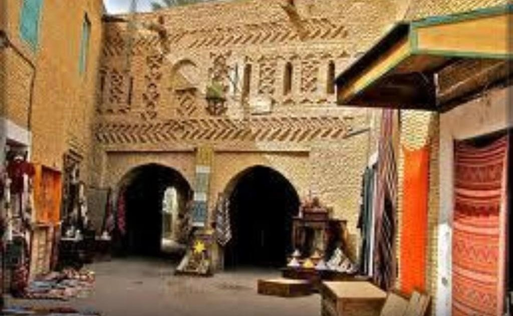
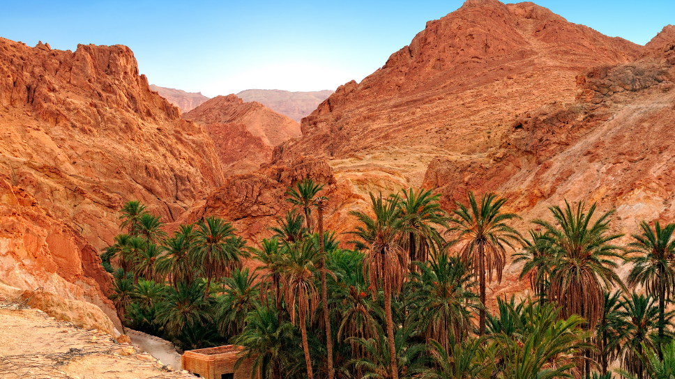

Welcome to Tozeur!
Tozeur, known as the gateway to the Sahara, is a captivating oasis town in southwestern Tunisia. It entices visitors with its breathtaking desert landscapes, ancient palm groves, and rich cultural heritage. From exploring traditional Berber villages to embarking on exhilarating desert excursions, Tozeur offers a unique and unforgettable experience for travelers.
Cultural Heritage:
Tozeur boasts a rich cultural heritage influenced by its Berber, Arab, and French roots. Visitors can explore museums, art galleries, and cultural centers to learn about traditional crafts, music, and cuisine. The town's annual festivals, such as the International Festival of Oasis Tozeur, celebrate local traditions and showcase vibrant performances and exhibitions:
- Museums: Explore the Dar Cherait Museum, showcasing artifacts reflecting the region's history and cultural diversity.
- Art Galleries: Visit Galerie D'Art Le Patio and other galleries to admire local and regional artwork, spanning traditional and contemporary genres.
- Cultural Centers: Immerse yourself in Tozeur's cultural scene at the Maison des Oasis, offering workshops, performances, and lectures.
- Traditional Crafts: Witness artisans at work in the Medina, crafting pottery, textiles, and jewelry using time-honored techniques.
- Music: Experience the melodic rhythms of Tozeur through live performances featuring traditional Berber and Arabic tunes.
- Cuisine: Indulge in the flavors of Tozeur with dishes like couscous, tajine, and brik, infused with aromatic spices and local ingredients.
- Annual Festivals: Don't miss the International Festival of Oasis Tozeur, a vibrant celebration of local traditions, featuring colorful parades and lively performances.

Accommodation:
Tozeur offers a range of accommodation options to suit every traveler's needs. From luxurious resorts and boutique hotels to charming guesthouses and desert camps, visitors can find comfortable and authentic places to stay amidst the desert landscape. Many accommodations feature traditional architecture, modern amenities, and panoramic views of the surrounding oasis.
Tourist Attractions near Tozeur
Chott el Djerid: Experience the surreal landscape of Chott el Djerid, a vast salt flat known for its mirages and stunning sunsets. Take a scenic drive and marvel at the endless expanse of salt crusts. Chott el Djerid is approximately a 30-minute drive from Tozeur.
Old Town of Tozeur: Wander through the winding streets of the Old Town of Tozeur, known for its distinctive brick architecture, traditional markets, and historic mosques. Explore the Medina and immerse yourself in Tunisian culture. The Old Town is right in Tozeur.
Mountain Oasis of Chebika: Immerse yourself in the serene beauty of the mountain oasis of Chebika, nestled amid the majestic Atlas Mountains. As you explore this hidden gem, prepare to be enchanted by:
- The lush date palm groves, offering a refreshing canopy of greenery amidst the arid desert landscape.
- The mesmerizing cascading waterfalls, where crystal-clear streams gently flow down rugged cliffs, creating a soothing symphony of nature.
- The inviting natural pools, carved out by centuries of flowing water, providing the perfect oasis for a refreshing dip or leisurely relaxation.
Located approximately a 1-hour drive from Tozeur, Chebika beckons adventurers and nature enthusiasts alike to experience the tranquility and splendor of its mountainous oasis.

Sahara Desert: Experience the enchanting beauty of the desert as you venture beyond the city limits. While camel rides and sandboarding are popular desert activities, there's a world of adventure waiting to be discovered. Explore:
- Exhilarating off-road desert safaris, navigating through towering sand dunes with skilled guides
- Mesmerizing sunrise or sunset meditation sessions amidst the tranquil desert landscape
- Stargazing under the pristine desert night sky, away from city lights, witnessing the Milky Way in all its splendor
- Cultural experiences like Bedouin camp visits, offering insights into traditional desert life, authentic cuisine, mesmerizing performances, and ancient customs
- Thrilling dune bashing adventures, speeding over sand dunes in a 4x4 vehicle for an adrenaline-fueled experience
- Exploring ancient desert oases, hidden gems of greenery amidst the vast expanse of sand, offering respite and natural beauty
- Photography expeditions to capture the breathtaking landscapes, shifting sands, and unique flora and fauna of the desert
Whether seeking adventure or serenity, the Sahara Desert promises an unforgettable journey of exploration and discovery.

Tamerza: Visit the abandoned village of Tamerza, once a thriving settlement nestled in the hills. Explore its ruins, including:
- Crumbling buildings and ancient dwellings, offering a glimpse into the village's past glory
- Terraced gardens and irrigation systems, showcasing the ingenuity of its former inhabitants in harnessing water resources
- Ruined mosques and communal spaces, revealing the social and cultural life of the village
Enjoy panoramic views of the surrounding landscape, where rugged mountains and arid valleys stretch as far as the eye can see. Tamerza is about a 1 hour 30-minute drive from Tozeur.
Star Wars set in Matmata: Explore the iconic Star Wars site in South Tunisia, where the desert landscape transports you to the galaxy far, far away. From Tatooine's mystique to Jedha's dramatic vistas, every corner holds a story. Whether you're a fan or an adventurer, this destination promises an unforgettable journey through time and space.
Additional Information:
| Population: | 115,700 (2023) |
|---|---|
| Area: | 44.6 km² ≈ 17.2 miles² |
| Common Languages: | Arabic, French |
| Means of Transportation: | Car rentals, taxis, buses |
| Official Currency: | Tunisian Dinar (TND) |
| Time Zone: | Central European Time (GMT+1) |